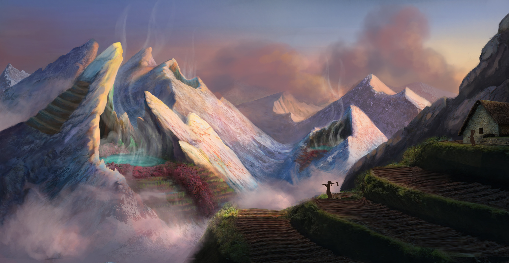
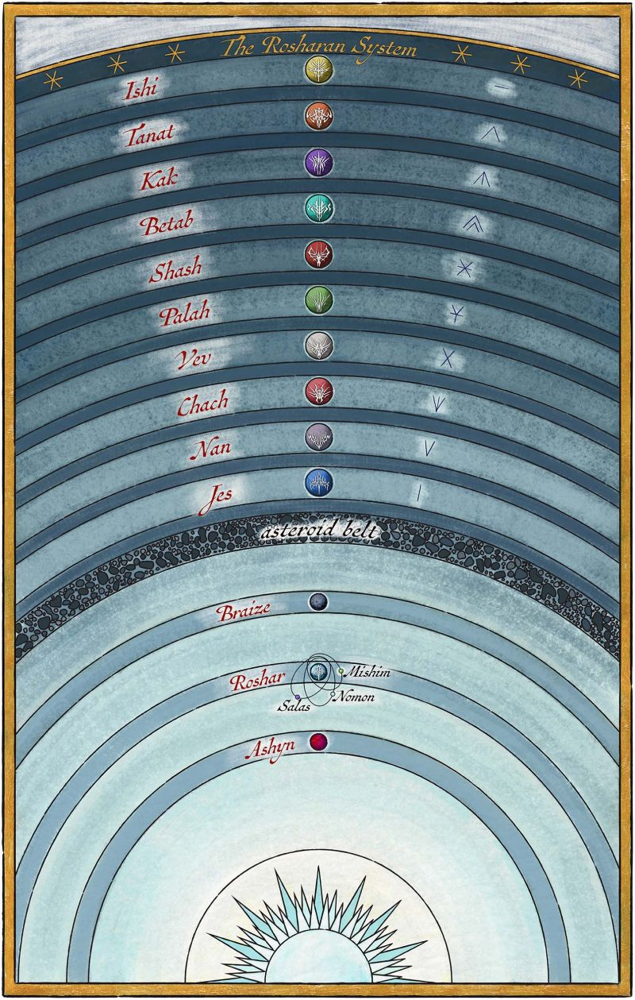
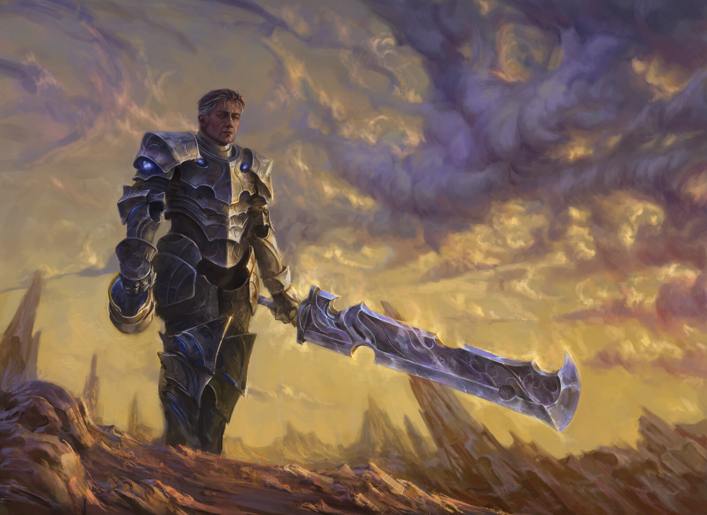
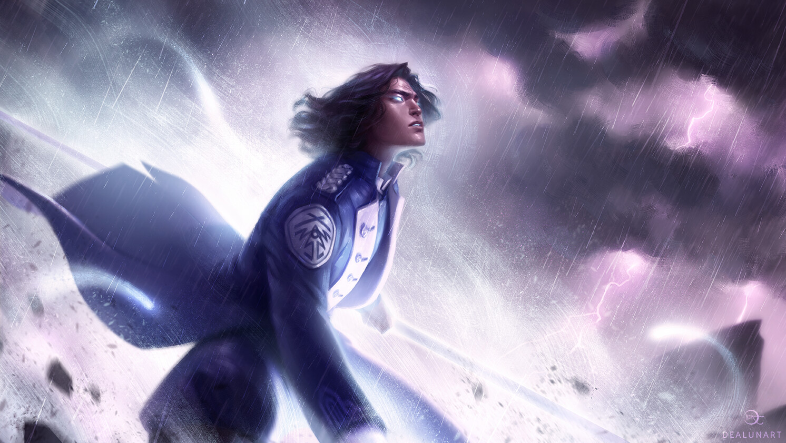

ROSHAR
A grand, hulking planet dominated by storms, home to a diverse and unique ecology containing megafauna and symbiotic relationships between creatures and beings of magic.
Much of Roshar’s surface is made up of rocky terrain and high plateaus, where cities are carved into the stone to withstand the storms. Water is often scarce, and the world’s strange flora and fauna have adapted in remarkable ways.

ROSHARAN SYSTEM
The Rosharan system is the name given to the planetary system containing the massive planet of Roshar. The system is also known as 'Greater Roshar'.
The system comprises thirteen planets, three of which are inhabited; Roshar, Ashyn, and Braize. The rest of the planets in the system are gas giants, divided by the asteroid belt.


INHABITANTS
Roshar’s inhabitants are as varied and adaptive as the planet itself, shaped by a land of stone, storms, and spren. The dominant race is human, but even among them, cultures differ widely, from the militaristic Alethi, with their rigid codes of honor, to the scholarly and devout Vorin peoples of the east.
Non-human peoples also thrive on Roshar. The Parshendi, also known as the singers, are a native race with a deep spiritual connection to the rhythms of the world and the spren. Their forms shift through symbiosis with different spren, granting them unique abilities tied to their purpose.
SURGES
Roshar’s magic system is primarily based on the interaction between humans, spren (spirit-like entities), and Stormlight, a radiant energy gathered from highstorms. The most prominent form of magic is Surgebinding, where individuals known as Radiants bond with specific spren to gain access to magical powers called Surges. Each type of Radiant has access to two unique Surges, allowing abilities like gravity manipulation, transformation, or healing.
Aside from Surgebinding, other forms of magic exist, often tied to the native peoples of Roshar. The singers, for example, change forms by bonding with different spren, gaining various abilities suited for war, work, or survival. There are also ancient, more mysterious systems like the Old Magic, granted by powerful beings like the Nightwatcher.


KNIGHTS RADIANT
The Knights Radiant are an order of magic-wielders on Roshar, formed during ancient times to protect humanity from cataclysmic threats known as Desolations. Each Knight forms a Nahel bond with a spren, which grants them access to Surgebinding.
The Radiants are divided into ten Orders, each aligned with a specific type of spren and two distinct Surges, such as Gravitation or Illumination. Beyond their powers, the Knights Radiant are defined by a set of oaths known as the Ideals, which vary slightly by Order but always emphasize honor, protection, and personal growth. These oaths must be spoken and internalized to progress in power.